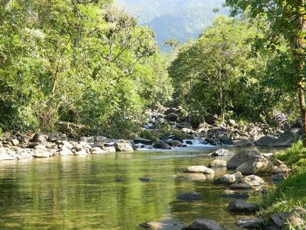
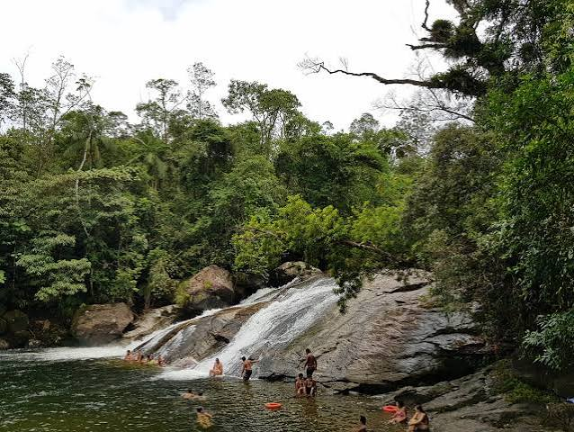

HISTORIA
A origem de Peruíbe está vinculada à história de São Vicente e, em especial, à trajetória dos jesuítas pelo litoral do Estado de São Paulo.
No século XVI, uma missão jesuítica estabeleceu-se no local que recebeu o nome de Aldeamento de São João Batista, ou São João da Aldeia, cujo objetivo, além de converter e pacificar os índios Carijós e Tamoios, que viviam ao sul da capitania de Itanhaém, era o de servir como pouso a viajantes. Situava-se em uma região estratégica na defesa contra investidas de corsários.
No final do século XVIII, com a expulsão dos padres jesuítas, a aldeia passou a ser administrada pelos franciscanos e o núcleo de Peruíbe entrou em declínio.

Só retomou o desenvolvimento como cidade balneária em meados do século XX, quando foi transformada por lei, em 18 de fevereiro de 1959, em distrito e município, com território desmembrado de Itanhaém. Peruíbe, em tupi-guarani, significa “no rio dos tubarões”.
Consta, porém, de alguns documentos que esse nome estaria associado ao modo como José de Anchieta se referia ao lugar, chamando-o de Tapirema do Peru, por suas semelhanças com a região peruana, onde os jesuítas haviam enfrentado dificuldades no exercício da catequese.
Fonte: Fundação SEADE – 2006
DICAS TURISTICAS
Estação Ecológica Juréia-Itatins. Área de proteção ambiental com trilhas, rios e praias selvagens, acessada pelo Portal do Perequê na Estrada do Guaraú.

Cachoeira do Perequê. Localizada no bairro Garça Vermelha, oferece poços de água limpa e cristalina ideais para banho. O acesso é fácil e há estrutura de restaurante nas proximidades.
